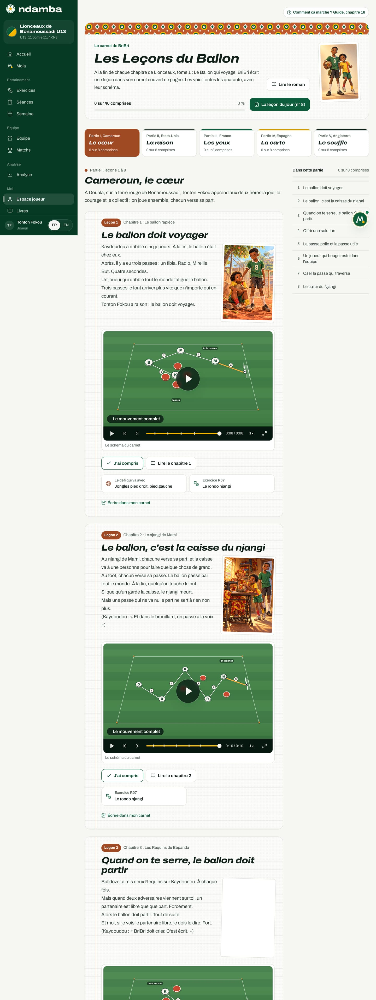
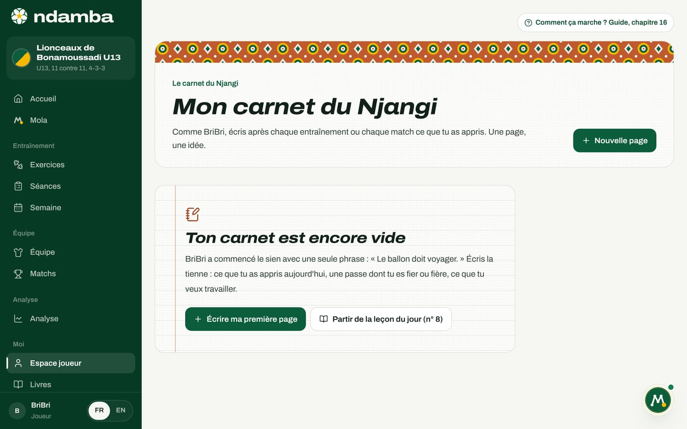
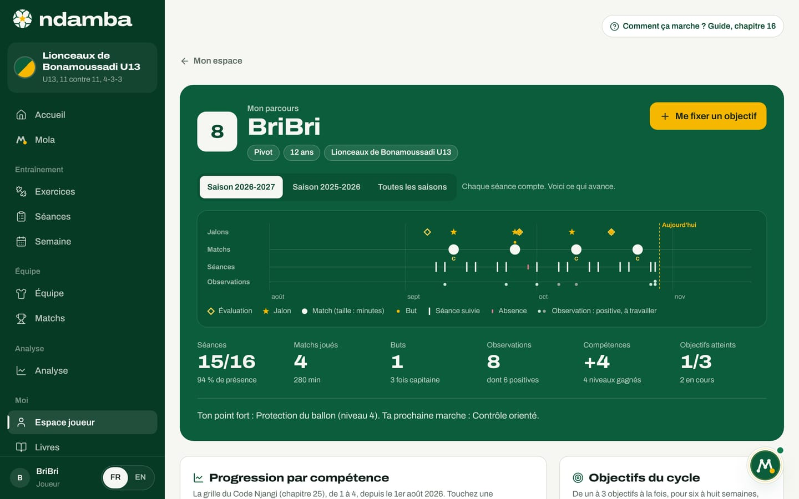

Les Leçons du Ballon, le carnet et le parcours
Les 40 Leçons du Ballon tirées du roman, la leçon du jour et le bouton « J’ai compris » ; le carnet du Njangi où le joueur écrit ce qu’il apprend ; le parcours qui garde sa progression saison après saison.
9 min de lecture
Un modèle de jeu ne s’apprend pas seulement sur le terrain. Il s’apprend aussi avec des mots simples qu’un enfant peut répéter, une histoire qui lui donne envie, et l’habitude de se demander, après chaque match, ce qu’il a compris. Ce chapitre présente trois outils qui servent exactement à cela. Les Leçons du Ballon racontent la méthode Njangi aux plus jeunes, à travers le carnet de BriBri dans le roman. Le carnet du Njangi permet au joueur d’écrire ses propres leçons. Le parcours garde la trace de tout ce qu’il construit, de saison en saison, pour que rien ne se perde quand il change de catégorie ou d’entraîneur.
Les 40 Leçons du Ballon
Dans Lionceaux, tome 1 : Le Ballon qui voyage, chaque chapitre se termine par une page du carnet couvert de pagne de BriBri : une leçon de football en quelques lignes, souvent avec un schéma. Il y a quarante chapitres, donc quarante leçons. Ndamba les rassemble dans l’espace joueur, avec le texte du livre, le schéma, l’illustration du chapitre et ce qu’il faut faire ensuite.
Les leçons suivent le voyage des deux frères, en cinq parties. Chaque pays apporte une pièce du Njangi.
| Partie | Pays | Pièce | Leçons |
|---|---|---|---|
| I | Cameroun | Le cœur | 1 à 8 |
| II | États-Unis | La raison | 9 à 16 |
| III | France | Les yeux | 17 à 24 |
| IV | Espagne | La carte | 25 à 32 |
| V | Angleterre | Le souffle | 33 à 40 |
On les ouvre de trois façons : le lien Les Leçons du Ballon en bas de l’espace joueur, le lien Toutes les leçons sur l’accueil, ou le lien d’une leçon sur une carte de défi (Leçon du Ballon n° 31, par exemple).

En haut, l’en-tête Le carnet de BriBri rappelle d’où viennent les leçons, avec le bouton Lire le roman et le portrait des deux frères. Le compteur (« 0 sur 40 comprises ») avance à chaque leçon comprise, et le bouton La leçon du jour (n° 8) descend directement à la leçon du jour.
Dessous, cinq onglets, comme les intercalaires d’un cahier : Partie I, Cameroun, Le cœur, et le nombre de leçons comprises dans la partie (« 0 sur 8 comprises »). Une seule partie s’affiche à la fois, ce qui garde la page légère sur un petit forfait de données. Chaque partie commence par une phrase qui résume son pays, puis ses huit leçons. En bas, le bouton Partie suivante : États-Unis passe à la suite. Sur un grand écran, la colonne Dans cette partie liste les huit titres et coche ceux qui sont compris.
Une page du carnet
Chaque leçon se présente comme une page de cahier ligné :
- l’étiquette Leçon 1 et le chapitre d’où elle vient (« Chapitre 1 : Le ballon rapiécé ») ;
- le titre de la leçon, écrit comme à la main (« Le ballon doit voyager ») ;
- les lignes du carnet, tirées du livre, avec l’illustration du chapitre collée à côté ;
- Le schéma du carnet, la situation sur un terrain, jouée en animation : touchez la lecture et les joueurs bougent, étape par étape, avec une légende pour chaque étape (39 leçons sur 40 en ont un) ;
- les boutons J’ai compris et Lire le chapitre 1, qui ouvre le chapitre du roman ;
- Le défi qui va avec, quand un défi de l’espace joueur travaille la même idée, et l’exercice du Code Njangi lié (par exemple Exercice R07, le rondo njangi) ;
- le lien Écrire dans mon carnet.


Dans l’application en anglais, la leçon s’affiche sous forme d’un court résumé en anglais, et la page originale en français reste à un geste, sous Read the original page in French.
La leçon du jour
Chaque jour, Ndamba choisit une leçon parmi celles qui ont un schéma. Le choix dépend seulement de la date : tous les joueurs ont la même leçon du jour, ce qui permet à un éducateur d’en parler à tout le groupe à l’entraînement. Elle apparaît sur l’accueil (La leçon du jour), dans la phrase qui tourne en haut de l’accueil, sur la carte du roman (le chapitre de la leçon du jour) et dans le carnet encore vide (Partir de la leçon du jour).
Quand une leçon est-elle comprise ?
C’est le joueur qui le décide. Quand il a lu la leçon, regardé le schéma et qu’il pense pouvoir l’expliquer, il touche J’ai compris. Le bouton devient Compris, c’est noté, la page porte l’étiquette Comprise, et les compteurs avancent : celui de la partie, celui des 40 leçons, et la case Leçons de la carte Ma progression sur l’accueil. Un deuxième toucher retire la marque.
Il n’y a ni note ni questionnaire, et c’est voulu : l’enfant n’est pas jugé sur sa lecture. Pour un parent ou un éducateur, une bonne règle est de lui demander d’expliquer la leçon avec ses mots, ou de faire le défi qui va avec, avant de toucher J’ai compris. Les marques sont gardées dans le navigateur de l’appareil. Elles font partie de la sauvegarde exportée depuis Réglages, qui peut les emporter vers un autre appareil, et Tout effacer les supprime.
Le carnet du Njangi
Dans le roman, BriBri écrit après chaque match ce qu’il a appris. Le carnet du Njangi donne la même habitude au joueur : une page, une idée. On l’ouvre par le lien Mon carnet du Njangi en bas de l’espace joueur, ou par la carte du carnet sur l’accueil.


Pour écrire une page :
- Touchez Nouvelle page (ou Écrire ma première page quand le carnet est vide).
- Donnez un Titre (par exemple « Ma passe qui traverse ») et vérifiez la Date.
- Écrivez sous Ce que j’ai appris. Quelques lignes suffisent. Pour démarrer, touchez une des amorces sous Pour t’aider à commencer : « Aujourd’hui, j’ai appris », « Une passe dont je suis fier ou fière : », « Demain, je veux travailler », « À ma place, BriBri aurait ».
- Si la page parle d’une leçon, choisissez-la dans Leçon liée (facultatif).
- Touchez Enregistrer. La page apparaît en haut du carnet, avec sa date et l’étiquette de la leçon liée.
Depuis une leçon, le lien Écrire dans mon carnet ouvre directement une nouvelle page reliée à cette leçon, avec son titre. Quand le carnet est vide, Partir de la leçon du jour fait la même chose avec la leçon du jour.
Chaque page se modifie avec le crayon et se supprime avec la corbeille, après confirmation (« Supprimer cette page ? »), avec Annuler proposé quelques secondes. Au-delà de quatre pages, une recherche apparaît (Chercher dans mon carnet). Le bouton Imprimer sort le carnet sur papier, sous le titre « Le carnet du Njangi de » suivi du nom du joueur : une belle chose à garder, ou à montrer à l’entraîneur.
À partir de 16 ans, la même page devient Mon journal de joueur, plus sobre, sans lien vers les leçons, avec des amorces d’adulte : « Ce qui a marché : », « Une action que je garde : », « À ajuster : », « À revoir en vidéo : ».
Le parcours, saison après saison
Le parcours répond à une question simple : qu’est-ce que ce joueur a construit ? Il rassemble au même endroit ce que l’entraîneur a noté (évaluations, observations, présences, minutes de jeu) et ce que le joueur s’est fixé. L’entraîneur le voit depuis la fiche du joueur (chapitre 10) ; le joueur voit le sien par la carte Mon parcours, dans l’espace joueur et sur l’accueil. La première fois, il faut relier son profil à sa fiche avec l’écran Qui es-tu dans l’équipe ? (chapitre 15), qu’un parent voit sous le titre Quelle est la fiche de votre enfant ?. Sans équipe, la page explique que le parcours se construit quand l’entraîneur ajoute le joueur à son effectif.


En haut, le parcours affiche le numéro, le nom, le poste, l’âge et l’équipe, puis les boutons de saison (Saison 2026‑2027, Saison 2025‑2026, Toutes les saisons). Une saison va du 1er août au 31 juillet. Le ruban de la saison place sur une même frise les Jalons, les Matchs, les Séances et les Observations, jusqu’à Aujourd’hui. Six chiffres suivent : Séances suivies sur le total avec le taux de présence, Matchs joués et minutes, Buts (dès le premier but, et toujours à partir de 17 ans), Observations (dont combien de positives), Compétences (les niveaux gagnés depuis le début de la saison) et Objectifs atteints. Une phrase conclut : « Ton point fort : Protection du ballon (niveau 4). Ta prochaine marche : Contrôle orienté. »
Plus bas, le joueur trouve :
- Progression par compétence : les dix compétences de la grille du Code Njangi, de 1 à 4. Touchez-en une pour voir sa courbe, ce que l’on observe aujourd’hui et la marche suivante.
- Le fil du parcours : son histoire de la saison, du plus récent au plus ancien, avec des filtres (Tout, Jalons, Évaluations, Observations, Matchs, Séances, Objectifs).
- Objectifs du cycle : un à trois objectifs, pour six à huit semaines, puis un bilan.
- Tes matchs : les actions qui font jouer l’équipe, sans comparaison avec les autres.
- Les grands moments : le premier match, la première titularisation, le premier but, une compétence qui atteint le niveau 3 ou 4 s’ajoutent tout seuls ; l’entraîneur ajoute les convocations ou les surclassements.
Le parcours s’adapte à l’âge. Avant 13 ans, la page le dit : « Chaque séance compte. Voici ce qui avance. » Les notes de séquence de l’entraîneur ne s’affichent pas à l’enfant, et il n’y a jamais de classement. De 13 à 16 ans, la page ajoute des repères de match, comme le pourcentage de passes réussies. À partir de 17 ans, Performance de la saison donne le détail rapporté à 90 minutes, et la phrase devient « Ton axe de travail ».

Le joueur ne peut ni modifier ni supprimer ce que son entraîneur a écrit. Il peut en revanche se fixer ses propres objectifs :
- Touchez Me fixer un objectif.
- Sous Lié à, choisissez Une compétence (par exemple Contrôle orienté) ou Un indice Njangi (par exemple Reprise).
- Écrivez L’objectif, en une phrase, ou touchez Reprendre la suggestion.
- Gardez la Date du bilan proposée, ou touchez 6 semaines ou 8 semaines.
- Touchez Enregistrer l’objectif. Il apparaît avec l’étiquette Mon objectif. Un objectif fixé par l’entraîneur s’affiche aussi, avec ce rappel : « Cet objectif a été fixé par ton coach : tu le vois ici, et vous en ferez le bilan ensemble. »